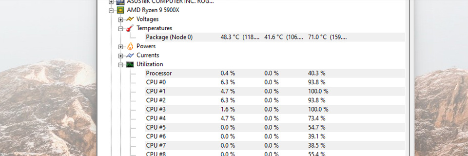
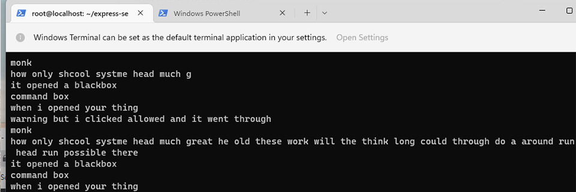
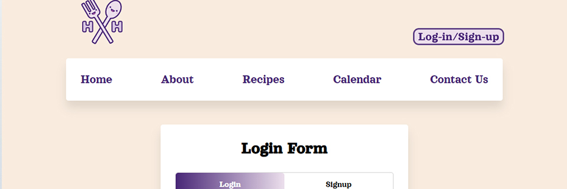
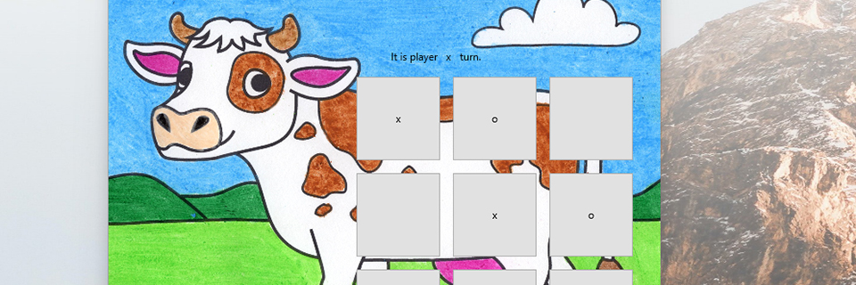
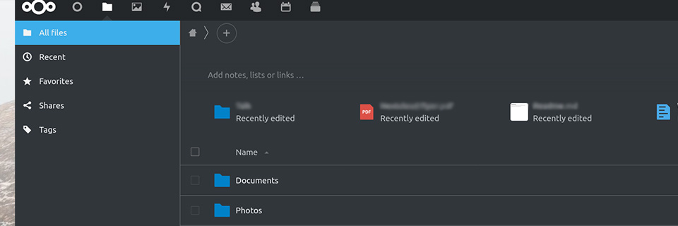
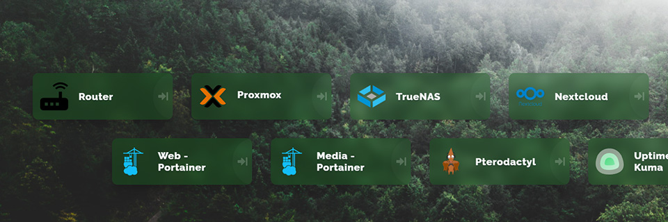

Skills
Programming Skills:
- Languages: C++, C#, Python, HTML, CSS, Assembly
- Frameworks: Node.js, React.js, Angular.js
- Developer Tools: VS Code, QT, Docker
- Front end UI and Back end server/database experience. Including personal server GUIs for system services (Heimdall, Rainmeter).
- Created small games, websites, desktop applications
Cyber Security & IT Skills:
- Developer Tools: Wireshark, GNS3, Snort, Unifi, Traefik, LetsEncrypt, Pi-Hole, Duck DNS, Docker, Proxmox, VMware, ESXI, XCP-ng, Portainer Grafana
- Security: Offering confidentiality, integrity, and availability by protecting and securing networks and end-systems
- Configuring and creating firewall rules, port management
- Deploying and securing virtual machines using Chef
- Information Technology: Configuring, troubleshooing, managing, and repairing networks systems, end systems, peripherals, and more.
- WAN, LAN, and SAN configuring, maintenance.
- Deploying and managing Virtual Machines and services using tools such as VMware, ESXI, Docker
Work
Personal portfolio created in HTML, CSS, and JavaScript. Additionally, the page will resize accordingly to the window size or device (ex: phone). Contact page was created with Netlify.

Cross-platform hardware monitoring application that reads PC system sensors such as: voltages, temperatures, clock speeds, drive information, etc. Additionally, Can calculate hardware utilizations and network speeds.
Program is purely built on python utilizing QT for GUI, PSUtill and GPUtill libraries.
Wrote the logic capturing all the hardware (CPU/GPU clock speeds, voltages, temperatures, disk drives, network activity and utilizations.)

Keylogger wrote in python. Keystrokes of user's will be sent over to a server where it is saved and can be viewed.
The .py file was compiled with Nuitka because it can be saved as an executable. Additionally, compiling this way makes it more difficult for Windows Defender to detect the Keylogger.

Web application that allows users to plan their meals. Has a calendar to help users plan their meals and offers a database of food recipes.
Additionally, the calendar can give you daily timed reminders when it’s time to eat.
I created the web UI written in HTML and CSS. I also create the sign-in and registration page with a database using Mangodb.

Created a light-weight cross-platform game completely written in C++ with C++ Builder with a simple and easy to use GUI.
Nexcloud Service:

Nextcloud is an opensource cloud service; very much like Google.
I have it running on a Docker container. I use Duck DNS and Traefik for a reverse proxy so I can access my cloud/server remotely from anywhere in the world (HTTPS).
Heimdall Page:

Heimdall is a home screen of a collection of all(or most) of the services you host.
I have my Heimdall running on Docker. In addition, I have all my containers collected on Portainer.
About Me
My name is Michael Trinh. I am a junior at Cal State Fullerton in the Computer Science Program minoring in Cyber Security.
I am currently a member of the CSUF OSS (Offensive Security Society)
where I had the opportunity to participate in the 2020 WRCCD Competition with the OSS Blue team where we were placed in the top 5.
I fell in love with computers at the age of 10. I’ve teared down and fixed anything I can get my hands on:
from computers, servers, and even circuit boards. From there, I started building custom high-end computer, servers, and networks together for fun; which
lead me to really finding my passion in networking.
I build my own rack-mounted homelab where I logged over 200 hours spent on configuring networks to exploit vulnerabilities and to learn how to secure it better.
Addition to that, I hosted various services such as: NextCloud, DNS server, and SSL server to name a few.
Contact